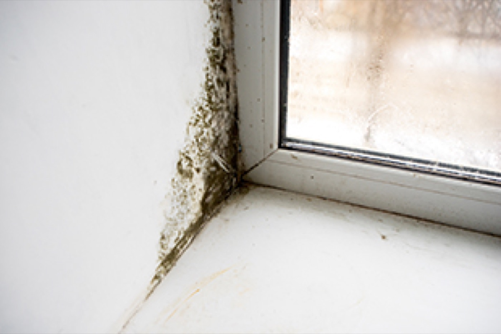

When it comes to caring for your home, one of the most important things that you can do is invest in quality.
While we are happy to invest in high quality furnishings and upholstery, many people forget to care for their own home ventilation system.
Do you have a problem with mould, damp and condensation at home?….. Then you could benefit from our Positive Input Ventilation installation service.
A Positive Input Ventilation system is a sophisticated ventilation and condensation control system that brings fresh filtered air from outside, into your house or apartment. Here are some of things it can help with:-
- Put an end to problems like mould, damp and condensation on your walls, ceilings and windows.
- Remove damaging and musty odours from the home,.
- Eliminate the environment that allows for the growth of mould, vastly improving your health.
- Improve radon dispersion, making sure that it’s much easier to live at home comfortably.
Prepare for the October-March ‘condensation season’ and ensure you are mould-free.
Installed in well over 1 million homes in the UK alone, PIV is one of the most popular low-energy ventilation systems on the market. Trusted by new-home developers, private landlords and social housing organisations.
A good quality of life is not something that you should see as an expense; it’s an investment in your health and your personal satisfaction.
Positive Input Ventilation: Do I Need Positive Input Ventilation?
While the choice is entirely personal, we recommend that you take a look at positive input ventilation system if you face issues such as:
- A period of extended growth of mould or dampness in any room of your home.
- A continual cough that you cannot budge when sitting at home.
- Poor quality air in the rooms of your home, with condensation building on the windows.
- Regular odours that float around in the air, making it hard to enjoy being at home.
If you have any of these issues, then it might just be time for you to engage with positive input ventilation installation. It’s a powerful solution that puts an end to the above for years to come.
Not only does positive input ventilation (PIV) provide you with a central point for filtered air in the home, it helps to make sure that each room is healthier, freed from the grips of damaging and disparaging problems in the air.
Reduce the chance of build-up of things like mould at home using this comprehensive solution.
